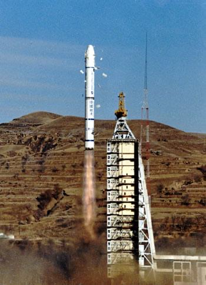
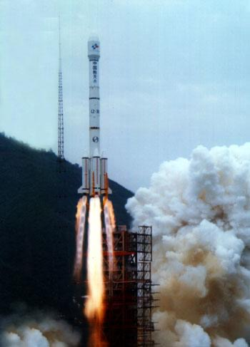
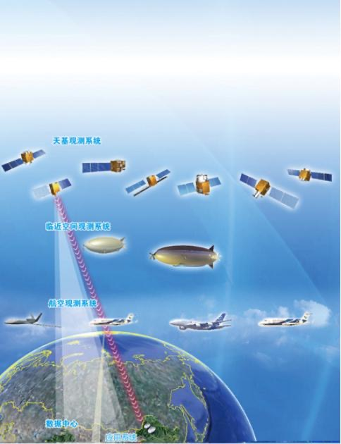
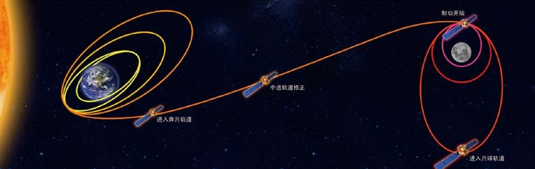
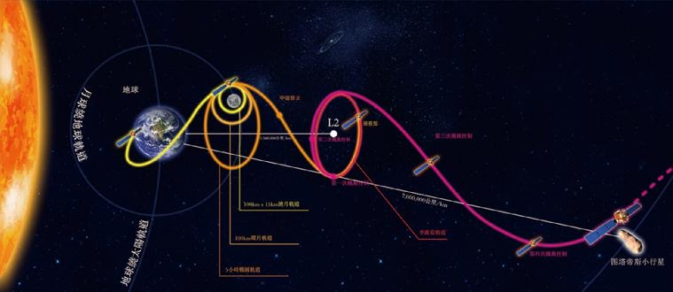
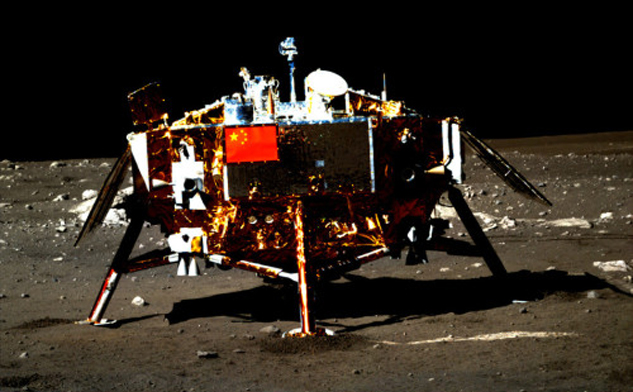
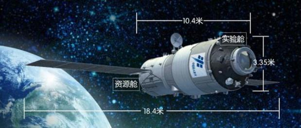

发射时间：1999年11月20日6时30分7秒
运载火箭：新型长征二号F捆绑式火箭
发射地点：酒泉卫星发射中心
任务概况：载人飞机第一次飞行试验
|

长征二号丙（CZ-2C）
发射时间：1982年9月 发射地点：酒泉卫星发射中心 任务概况：主要承担了我国返回式科学与技术试验卫星、探测一号、探测二号、海洋一号卫星、环境一号卫星和美国“铱”系列通信卫星等发射任务。 |
||
|

长征三号乙（CZ-3B）
发射时间：1996年2月15日 发射地点：西昌卫星发射中心 任务概况：承担了委星1号、巴星1R、尼星1R、W3C、亚太七号、中星十一号、中星十二号、玻利维亚星等国际国内通信卫星和“嫦娥三号”月球探测器的发射任务。 |
|

高分辨率对地观测系统
高分辨率对地观测系统重大专项是《中国中长期科学和技术发展规划纲要(2006-2020)》部署的一个国家重大科技专项，由国家航天局对地观测与数据中心负责具体组织实施。 |
||
|

嫦娥一号探测器
2007年10月24日，我国用长征三号甲运载火箭从西昌发射了第一颗月球探测卫星嫦娥一号。经过近14天、206万公里飞行、8次变轨后，嫦娥一号到达月球附近，开展绕月探测，实现了中国探月工程的首次突破。 |

嫦娥二号探测器
2010年10月1日，中国用长征三号丙运载火箭从西昌发射第二颗月球探测卫星嫦娥二号。嫦娥二号验证了探月工程二期部分关键技术，深化了月球科学探测，详细勘察了嫦娥三号预选着陆区虹湾，并在完成任务后继续探测宇宙，由探月卫星变为中国首颗太阳系人造小行星。 |

嫦娥三号探测器
2013年12月2日，我国用长征三号乙加强型火箭，成功将嫦娥三号探测器发射升空，12月14日嫦娥三号着陆月面，着陆器和巡视器(“玉兔号”月球车)实现分离，中国首次实现月面软着陆和巡视勘察;12月15日，着陆器和巡视器互拍成像，标志着嫦娥三号任务圆满成功。 |
|

天宫二号
天宫二号空间实验室是在天宫一号目标飞行器备份产品的基础上改进研制而成，全长10.4米，最大直径3.35米，太阳翼展宽约18.4米，重8.6吨，采用实验舱和资源舱两舱构型，设计在轨寿命不小于2年。 |